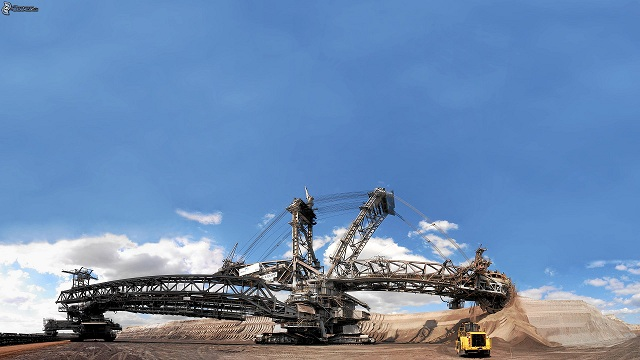
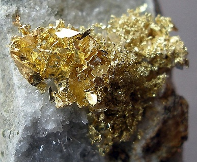
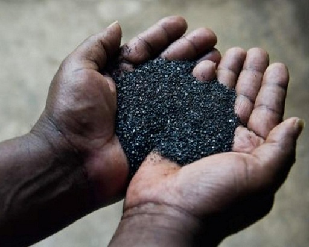

 LA MINERÍA EN COLOMBIA: REMEDIOS, ANTIOQUIA ¿Cuáles son los efectos que tiene la minería en un pequeño municpio de Colombia? Averiguelo |
 EL ORO ILEGAL DE COLOMBIA La minería desde épocas coloniales, ha sido importante para todos, incluso hoy en día, lo que despierta avaricia |
 LA VERDAD DEL COLTAN EN COLOMBIA El Coltan, es un mineral que es muy utilizado para la creación de aparatos tecnologicos, sin embargo ¿Sabe su riesgo? |
 LA FIEBRE DEL ORO El oro es un mineral muy orecioso que genera en las personas que muevan cielo y tierra por él. |